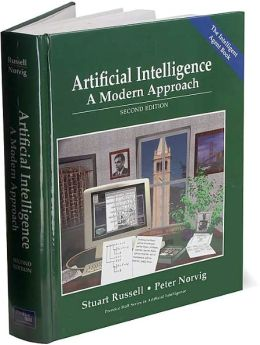

一階述語論理ベースのプランニング と lisp
Lisp Advent Calender 2013 day 17
- 知っている方なら、内容に過度な期待はしないでください。
- コンピュータサイエンス学科の人なら習ってるはず(?)
- よろしくおねがいします。
Press "n" to proceed, "p" to move backward
Keyboard Help: another-org-info @ github
書いた人: guicho2.71828 (浅井 政太郎)
Special Special Thanks: Alex 福永 准教授
場所: 東京大学駒場キャンパス内 (渋谷の近く!)
研究室HP: http://metahack.org/
1 まえがき
この記事は今M1の自分の研究内容の紹介みたいなものです。 しかも自分はこの分野に入ってまだ半年ぐらい。 理解が足りず間違っている箇所があってもご勘弁を・・・。
さて。
昨今、他の言語がweb系の技術で躍進している傍ら、 数多のLisper達が、他言語に遅れをとっては居られないと (特にライブラリ面で)動きを加速させている感じがあります。 quicklispが出てきたから* ですかね。
(*) なお自分が大学一年の時(2009)は、 まだasdf-installしかありませんでした。 まあでも、他の人に比べれば、 この時期にlispを始めた自分は幸運だなあ。
でも とはいえ
Lisp の本命は人工知能です。
というわけで、今日のお話は、webやなんやらで使える話ではなく、 人工知能の分野、そして人工知能とlispがいかに関わってきたのかを とても軽く 、 そしてプランニングという一分野をまたも とても軽く 紹介してみたいと思 います。 ところどころ間違っているかもしれません。
2 Lisp の はじまり
人工知能の分野は1960年あたりにできた まだ始まって50年ちょっとの若い分野です。
できたばかりの人工知能の分野の中心で、 Lisp は John McCarthyによって考えだされ、 また Steve Russell によって生みだされたのでした。
AI Memo 8
McCarthy, J. Recursive functions of symbolic expressions and their computation by machine Communications of the ACM, 1959
McCarthyによって S-expression という考え方が初めて紹介された論文が これです。
2.1 時代背景
重要な時代背景として、以下のことを念頭に置いてください。
- プログラムはパンチカード式
- FORTRAN 登場は 1956年 ALGOL 登場は 1958年
- 「リスト構造」の発明 1957年
- 計算資源に触れることができた人間は全世界でもひとにぎり
- 「人工知能」という話をすると、神学者とかに反論された
- 人間が知能を作るなどおこがましい！みたいな意見があったらしいです
いやはや、今とは全然違う時代です。 コンピュータが弾道計算、暗号解読のためにあった時代です。 そんな時代に人工知能をやりはじめたのです。
注：以下の内容は福永研のゼミに出れば聞くことができるかもしれません。
(福永研は、外部からの院生、博士号を取りたい社会人などを大歓迎します)
2.2 人工知能: 前日譚
Lisp誕生および人工知能誕生前後の経緯は以下に詳しい。 (読むか、あるいは、福永研のゼミに参加するという手もあります)
McCarthy,J. History of Lisp 1978
読めばわかります。(あるいは、ゼミに(略))
1959年, the Dartmouth Summer Research Project on Artificial Intelligence
通称Dartmouth会議。 このミーティングこそが、 「人工知能」という分野(言葉?)が始めて誕生した瞬間です。
会議に参加したMcCarthy は、この時点で、 Advice Taker (Programs with Common Sense, 1958) という 仮想的な(未実装の)プログラムを用いて、 「強い知能プログラムの満たすべき条件」の草案を提唱していました。
また、同じく参加していた Herbert Simon, Newell, Shaw らは、 1956年に Logic Theorist* とよばれる最初の自動定理証明機を作り上げていました。 この論文は、「ヒューリスティック」という概念の強力さを 始めて提唱した論文でもあります。
これらを背景に、McCarthyは、一階述語論理を用いて再帰的に関数を定義 するための構文を定義する必要性、あるいは定義した場合の利便性に気づきました。
*) A Newell, JC Shaw, HA Simon Empirical explorations of the logic theory machine: a case study in heuristic 1956
2.3 Simon, Newell, Shaw: Logic Theory Machine
話を続ける前に、のちの話の準備として Logic Theorist について 話しておきたいと思います。
Logic Theorist (LT,原文ではLogic Theory Machine) は、 世界初の自動定理証明機 です*。 まずLT は、入力として定理をとります。 次に、5つの公理に対して繰り返し推論規則を適用して、その定理までたどり着きます。 最後に、入力に対する証明を結果として返します。
このプログラムの中で、定理は以下の 4つの演算子 Connective をもちいて表現されます。
not, or, implies, and
これらは組み合わせると、複雑な定理を表現することができます。
(p implies not-p) implies not-p
そして、以下に上げるのが, Principia Mathematica(数学原理) にある５つの公理です。 LTは、これらを使って、数学原理のけっこうな数の定理を証明しました。
(p or p) implies p p implies (q or p) (p or q) implies (q or p) [p or (q or r)] implies [q or (p or r)] (p implies q) implies [(r or p) implies (r or q)]
うーん、じつは Martin Davis による Presburger's algorithm の実装(1954?)もあったそうなんですが、 注目された論文が出ているのが1960年ですから、論文出てないなら無いのと同じ、という方向で。 A computing procedure for quantification theory (Cited by 2762 @ Google Scholar)
2.4 ３つの操作 substitution, replacement, detachment
推論規則は３つあります。
- substitution
p implies (q or p)
p に (q or p) を代入して
(p or q) implies [q or (p or q)]
- replacement
or と implies をいれかえられる
p implies (q or p) <-> not-p or (q or p)
- detachment
A と A implies B が定理(または公理)ならば B も定理
LTは、先程述べた５つの公理に"様々な順で"上の３つの操作を適用することを 試します。入力として与えられた定理が求められれば、そこに至るまでに必要 だった操作を "Print out" します。 当時はディスプレイなんてなかったの で、本当に紙にプリントします。
2.5 論文の紹介(簡単に)
この論文の貢献は、いろいろあると思いますがとにかく無茶苦茶すごくて、 まず、「計算機は定理証明をできる」と示した(初めて?)のがスゴイ。 Principia Mathematica の結構な数の定理を、50年前のコンピュータで証明 させています。
また、この問題によって、「定理証明はグラフ探索みたいなものだ！」 ということがわかりました。 それぞれのノードが今ある定理で、 そこに推論規則を適用すれば、適用した規則に応じて複数の新たな定理ができます。 適用の仕方が複数あるので、枝分かれが起こります。
またその結果、「探索が進むに連れてノードの数が爆発する」ことを発見しました。 これは、ノードごとに、適用できる定理の数が複数あり、 結果ノードの数が倍々でどんどん増えて行ってしまうからです。
最後の貢献として、この爆発に対処するため、 「目的の定理に一番早くたどり着く」ノードを優先的に選択する方法 すなわち「ヒューリスティクス」という考え方を提唱しました。
2.6 命題論理と一階述語論理
先ほどのLogic Theorist の探索は、命題論理に基づいて行われました。 つまり、関数が出てこない。 一方で、一階述語論理と呼ばれるものもあります。 一階述語論理は、 \(\forall\) と \(\exists\) を使えるような論理体系です。 表現能力が高いので、AI分野ではそれが研究の中心になっていきました。 もっと高階の論理を使うことも考えられましたが、 当時の演算能力では途方もないものだったため、 とりあえず一階述語論理だけに絞ることにしようとしたのだと思います。
命題論理
\(A,B,C,D,P,Q,R,S\ldots\)
一階述語論理
\(\exists x; p_1(x), \forall y; p_2(y) \ldots\)
2.7 経緯
正直、経緯はよく知りません。でも、まあ、結論から言えば、
一階述語論理を使うなら、リストだ!!!!
(predicate x y z)
ということになったみたいなんですよね。 ま、こういうことなんですよ、lispが使われるようになったのは(雑)。
つまり、 まずその時点でリスト構造は発見されていて、ゆえに配列を使うのは適切ではなかった。
で、 たまたま McCarthyが、 S式を使った再帰的な関数呼び出しの表現方法を思いつきました(雑)。 さらに、evalの実装方法も考えつきました(雑)。 evalがあれば、S-expressionを使って、 再帰的な関数呼び出しの構造を表現できるから。
McCarthyは「表現できる」と主張しただけで実装するつもりはなかったのですが、
LISP実装の作業をやらせるためにたまたま雇った大学生の一人 Steve Russell が たまたま その論文を読んで、 (M式ではなく) S式のまま プログラムをあつかうevalを、 しかも機械語で実装してしまいました(雑)。
またまたついでに、実装していた IBM 704 には リスト操作が簡単にできるような 機械語が たまたま 載っていたわけです。
ほんとにたまたまだと思うんですが、 結果その後の人工知能分野では基本的にlispが使われるようになったみたいです。
– lispの話は終わり –
3 プランニングの紹介
話のつなげ方を全く考えていなかったので、 どうやっても唐突にならざるを得ませんが、 自分のいまの研究分野である古典的プランニングについて軽く解説します。 はたしてこれがlispとどう関わるのか?
まあ、まずは定理証明を振り返りましょう。定理証明は
- 前提から
- 公理を順に適用して行って
- 結論を導く
ことでした。これをもう少し広く考えたのがプランニング問題です。
プランニング問題では、
- 初期状態から
- 世界に対してアクションを順に適用して行って
- ゴールまでたどり着く
ということを、計算機に自動でやらせます。
問題の困難さという点では、 Logic Theorist に出てきた問題と同じ難しさがあります。 つまり、ノードごとに、アクションの数だけ枝が倍々に増えるので、 賢くノードを展開していかないとすぐにメモリが爆発します。
3.1 例 : Blocks world
人工知能の教科書に出てくる例、 Blocks World とよばれる問題を用いて、 プランニング問題を説明します。
プランニング問題のタスクは、 左の 初期状態 から、右の ゴール状態 まで 状態(State) を 遷移させるための手段(プラン)を計算することです。 状態 (state) は、世界の状態を表しています。 初期状態には \(s_0\) や \(I\) (Init), ゴールには \(s^*\) や \(G\) という記号が好まれます。
3.2 状態
世界の状態というのは、 命題(facts) あるいは 事実(proposition) の集合として表現されます。
下の例では、 (on A floor) というのがひとつの命題ですね。
一つの状態が３つの命題で構成されています。
何個の命題で構成されるのかは、場合によって増減します。
より突っ込んだ話は 開世界仮説 でググってください
3.3 オブジェクト
それぞれの命題は、そのひな形である 述語(predicate) の引数に オブジェクト (object) を代入したものです。 二階以上の述語論理では、 オブジェクトだけでなく関数も引数に取ることができますが、 一階述語プランニングではそういったものは扱いません。 (そのため、mapcarやreduce, everyやsomeは実装できません。)
3.4 アクション
状態を遷移させる行為が アクション です。 プログラムは、可能なアクションのセットを使って、 ゴールまでにどのような操作を行えばよいか、 あるいはそのような方法は存在しないかどうか、を探索して調べます。 アクションはオペレータと呼ばれることもあります。
系で使用可能なアクションの集合のことを アクション集合 \(\cal A\) と呼びます。 例えばBlocks Worldの場合、 ロボットアームは下にしめした４つと「放す」の操作が可能であり、 アクション集合 \(\cal A\) は５つの要素の集合になります。
一方、定理証明の場合は３つでしたね。(substitute,replace,detach)
3.5 アクション
アクションには、 引数 、 前提条件(precondition) 、 効果(effect) という要素があります。
操作 「積み木 x をアームで持ち上げる」
引数 : x
前提条件 : 「x の上には何も乗ってない」
「アームは何もつかんでいない」
効果 : 「アームは x をつか」むようになる
「x は テーブルの上」でなくなる
「x の上には何も乗ってない」でなくなる
「アームは何もつかんでいない」でなくなる
アクションは、前提条件が現在の状態の中で満たされていないと適用できません。
効果は、アクションを適用した場合に、 結果の状態の中に命題を追加したり削除したりします。
適用の際には、引数である x に実際の値を代入して使います。
効果は、２つに分けて 追加効果 と 削除効果 と呼ばれたりします。
〜でなくなる、という内容の効果が削除効果です。
3.6 プラン
得られた操作(アクション)の列のことを Plan \(P\) と呼びます。 できれば短いプランがほしいです。 ただ、アクションにコストを与えることで、 コスト最適なプランを探すという問題もあります。 この観点からは、「短いプランを探す」問題は 全アクションにコスト1を割り当てた問題になりますね。
3.7 これはなんでしょう？
ナニコレ？？珍百景？？？(わざとらしい)
(:action pick-up :parameters (?x) :precondition (and (clear ?x) (ontable ?x) (handempty)) :effect (and (not (ontable ?x)) (not (clear ?x)) (not (handempty)) (holding ?x)))
4 PDDL
さて、もう種明かししてしまったわけですが、
なんとこのプランニングの分野、
標準的な入力仕様は S式
です！
PDDL フォーマット (Planning Domain Description Language) と呼ばれます。 バージョン3までありますがすべてS式。
Plan Constraints and Preferences in PDDL3, 2005
4.1 ドメインファイル
PDDLには２つの種類のファイルがあります。
一つがdomain ファイル。もうひとつが problem fileです。
どちらも .pddl という拡張子です。
domain ファイルは以下のような見た目をしています。
まさに read しろと言わんばかりの フォーマットですね。
自分の研究では、
これを読んでパースするライブラリを(もちろんcommon lispで)作って使っています。
(define (domain BLOCKS) (:requirements :strips) (:predicates (on ?x ?y) ;; <- 使える述語リスト (ontable ?x) (clear ?x) (handempty) (holding ?x)) (:action pick-up :parameters (?x) :precondition (and (clear ?x) (ontable ?x) (handempty)) :effect (and (not (ontable ?x)) (not (clear ?x)) (not (handempty)) (holding ?x))) ...
4.2 問題ファイル
もうひとつの problem file はこんなものです。
たいてい p01.pddl みたいな名前を付けられています。
一つのドメインに対して複数の問題があって、
基本的に、番号が上がるほどオブジェクトの数が多くなり、
爆発しやすい難しい問題になります。
(define (problem BLOCKS-12-0) (:domain BLOCKS) (:objects I D B E K G A F C J L H ) (:INIT (CLEAR H) (CLEAR L) (CLEAR J) (ONTABLE C) (ONTABLE F) (ONTABLE J) (ON H A) (ON A G) (ON G K) (ON K E) (ON E B) (ON B D) (ON D I) (ON I C) (ON L F) (HANDEMPTY)) (:goal (AND (ON I C) (ON C B) (ON B L) (ON L D) (ON D J) (ON J E) (ON E K) (ON K F) (ON F A) (ON A H) (ON H G))))
4.3 バージョン
PDDLには複数のバージョンがありますが、
どれも下位互換性をある程度保っています。
途中のバージョンでは、
型を扱えるようになったり、
数値を扱えるようになったり、
:axiom という概念を使えるようになったりします。
(:action do-immersion-varnish :parameters (?x - part ;; <- 型 part ?m - immersion-varnisher ?newcolour - acolour ?surface - surface) :precondition (and (idle ?m) (available ?x) (has-colour ?m ?newcolour) (surface-condition ?x ?surface) (is-smooth ?surface) (treatment ?x untreated)) :effect (and (increase (total-cost) 10) ;; <-- 数値 (not (idle ?m)) (not (available ?x)) (not (treatment ?x untreated)) (not (colour ?x natural)) (immersion-varnishing-now ?x ?m ?newcolour ?surface)))
5 プランニングの計算複雑性 : PSPACE-complete
プランニング問題の計算複雑性は PSPACE完全 と呼ばれています。 これは、任意のプランニング問題が 制約充足問題 (SAT問題) に変換できること、 および SAT問題が PSPACE完全 であることから導かれます。
PSPACEとはどういうことかというと、 問題サイズNに対して指数関数的にノードの数が増えるので、 必要な探索空間(およびそれを記憶するのに必要なメモリ)が、 最悪で 指数的に増えるという事です。
(最悪で 、ということは、短くする方法が無いわけではないわけです。 そのためのヒューリスティクス)
6 もっと知りたい人は
この鈍器を買ってね！

二万円ぐらいします。しかも最新版は未訳です。
Artificial Intelligence: Modern Approach 3rd edition 邦訳二版は「エージェントアプローチ人工知能 第二版」。 なんでそんな訳になったし
6.1 プランニングの教材としては
この教科書が新しくて良いらしいです。
Geffener Bonet, A Concise Introduction to Models and Methods for Automated Planning
- 2013
7 プランナ
このプランニング問題を解くプログラムは、一般に プランナ と呼ばれます。
自分のプランナを書いてみたいという人は、下のページ* を見てみてください。 さっき紹介した鈍器の中にもある GraphPlan アルゴリズムの実装や、 計算量の話で現れたように 「プランニング問題をSATに変換して解く」 プログラム例があります。
http://www4.ncsu.edu/~stamant/simple-planners/simple-planners.html
ここに示されたプログラム例は、効率こそそこまでよくありませんが、 理解しやすくなるように実装されています。 PAIP よりも後に出版されたため、PAIPを読んだ人にも役立つはずです(福永先生談)
また、Carnegie Mellon University は CMUCLでも知られていますが、
そこの AI repository では UCPOP という Partial Order Planner のソースが落ちています。
(詳しくは鈍器を参照)
http://www.cs.cmu.edu/afs/cs/project/ai-repository/ai/areas/planning/systems/0.html
先生によるFollow up: UCPOPは、複雑であるために理解する教材とは適さず、 またヒューリスティクスを使っていないのでむちゃくちゃ遅いとのこと。
(*)このページを教えてくださった福永先生に感謝します。
8 こぼれ話
そのほか、AI分野とlispにまつわる話や、最新の話を。
8.1 NASAの宇宙探査機にはCommon Lispが乗っている
宇宙探査機は、一回の通信のために長い時間がかかるので、 通信と通信の間を完全に自律して行動しなくてはなりません。 こういった場合、ロボットにプランニングに基づいて 自律行動させることが必須になります。
どうやらNASA JPL (Jet Propulsion Laboratory) はそれ関連で 1999年ぐらいまでLispを使っていた らしいです。 Deep Space One には、Remote Agent とよばれるlisp製のプログラムが乗っていたそうです。
まあ、いろいろと伝聞口調で申し訳ありません。よく知らないので。 いまここにあるのは、福永先生からFollow up がはいった後の内容です。 やはり、話は中に実際にいた人に聞くべきですね!
8.2 ハッブル望遠鏡
ハッブル望遠鏡の運用には SPIKE とよばれるスケジューラが使われています。 望遠鏡には、無数の天文学者から、 バラバラに複数の観測目標のリクエストが送られてきます。 しかし、宇宙空間に居る望遠鏡は、姿勢を変えるのに非常に時間がかかります。 そこで、プランニングを用いて望遠鏡のアクション数を最適化することが重要になります。 プランナは地上のコンピュータで計算し、作ったプランを衛星に送ります。 なおこの内容は例の教科書に乗っています。
スケジューリングはプランニングと関連した分野です。 SPIKEは衛星運用に特化したプログラムですが、 一般には Temporal Planning (scheduling) という、広い範囲の問題を扱える分野があります。
8.3 International Plannning Competition
数年に一度、 IPC と呼ばれるコンペがあります。 決められた(事前には知らされていない)ドメインとその問題について、 CPUやメモリ・探索時間を共通にした上で、 どこまで難しい問題が解けるかどうかを競います。
現状最強のプランナとして名を轟かせているのが、 Malte Helmert 先生の Fast Downward です。 一番最近のIPCである IPC 2011で優勝しています。
8.4 Heuristic 関数
プランニング問題の速さは、先程も書いたとおり大まかには ヒューリスティック探索の効率の良さによって決まります。 近年になって(再)注目され始めたのが、A*探索ベースの前方探索プランナです。 2000年ぐらいのIPCで現れた Fast Forward プランナというのがその事始めになりました。
A* 探索なので、ヒューリスティック関数の質(とその関数の計算コスト) によって探索速度が変わってきます。 FF のもつヒューリスティック関数は \(h_{FF}\) とよばれ、 今でも定期的に比較の対象になります。
その後、理論的に関数の解析が行われ、 いまでは \(h^+\) (削除効果緩和ヒューリスティクス) を中心に \(h^{max}\) , \(h^m\) , \(h^{PDB}\) (Pattern Database Heuristics), Merge and Shrink heuristics といった数々の関数が作られてきています。 「楽に計算できて」「よりよいヒューリスティック値を与える」関数が 好まれます。
そして、いま最強として知られている関数が、Landmark-Cut heuristics \(h^{LM_{cut}}\) です。 どうです、名前聞いただけでもかっこいいでしょう。そんなことないか。
なお、ここに示した内容の後半は、 鈍器の邦訳には載っていません! 第三版が訳されていないからです。英語版を読みましょう!
8.5 最後に
これらの進歩のおかげで、 今のプランナは かなり大規模な問題でも解けるようになっています。
そのかわり残念ながら、 速度こそが一番の重要事項であるこれらのプランナの実装は、 昔はCL製のものもあったものの、今はC++などに移ってきています。 (JPLでもそうでしたね)
しかし、プランナの外からメタに問題を操作したりするのなら、 依然としてlispは優れたツールです。 素早くプロトタイプして、短いサイクルで評価して、論文を出す。 こういうのはlispの十八番です。
というわけで最後に